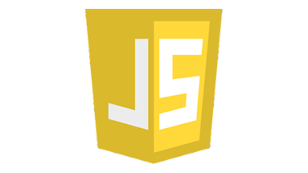

¿Qué es HTML?

Es un lenguaje que se utiliza para la creación de páginas en la WWW
¿Qué es CSS?

Es un lenguaje de diseño gráfico para definir y crear la presentación de un documento estructurado escrito en un lenguaje de marcado.
- HTML 1
- HTML 2
- HTML 3
- HTML 4
- HTML 5
¿Qué es JavaScript?
Es un lenguaje de programación que se puede utilizar para construir sitios web y para hacerlos más interactivos
Lincenciatura en Sistemas Computacionales
© Copyright 2020. Edgar Antonio Lopez Zarate